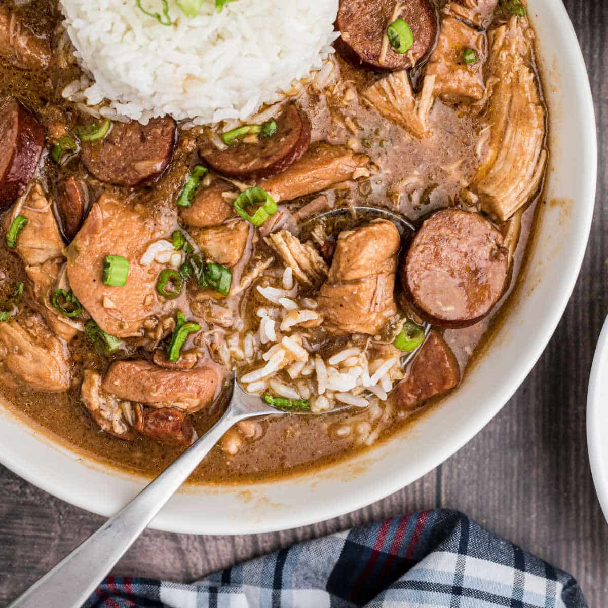

Tasty Southern Gumbo

A delicious bowl of gumbo made at Nana's
Description
A big bowl of gumbo is one of the best things to eat on a cold winter day
when you need a little warmth! The key to any good gumbo starts with a beautiful roux.
A good roux tastes a lot of practice to perfect. Following my recipe should
help you makes a tasty dish for your whole family.
Ingredients
- 2 lb. chicken
- 2 lb. sausage (prefferably downhome sausage)
- 1 cup all-purpose flour
- ¾ cup bacon drippings
- 1 cup coarsely chopped celery
- 1 large onion, coarsely chopped
- 1 large green bell pepper, coarsely chopped
- 2 cloves garlic, minced
- 1 pound andouille sausage, sliced
- 3 quarts water
- 6 cubes beef bouillon
- 1 tablespoon white sugar
- salt to taste
- 2 tablespoons hot pepper sauce (such as Tabasco®), or to taste
- ½ teaspoon Cajun seasoning blend (such as Tony Chachere's®), or to taste
- 4 bay leaves
- ½ teaspoon dried thyme leaves
- 1 (6 ounce) can tomato sauce
- 4 teaspoons file powder, divided
- 2 (10 ounce) packages frozen cut okra, thawed
- 2 tablespoons of bacon grease
As you can see there are a lot of ingredients that go into making
gumbo. Don't be scared though, the final product will be well worth the effort.
Step By Step Guide
- Gather all ingredients.
- Make the roux: Whisk together flour and 3/4 cup bacon drippings in a large, heavy saucepan over medium-low heat until smooth. Cook roux, whisking constantly, until it turns a rich mahogany brown color. This can take 20 to 30 minutes; watch heat carefully and whisk constantly or roux will burn. Remove from heat; continue whisking until mixture stops cooking.
- While you are working on the roux have a pot of water boiling. Season your chicken breast with salt, pepper, and cajun seasoning and then boil the chicken making sure it is completely cooked.
- Make the gumbo: Place celery, onion, green bell pepper, and garlic into the work bowl of a food processor, and pulse until all vegetables are very finely chopped.
- Stir vegetables into the roux, and mix in chopped sausage. Bring mixture to a simmer over medium-low heat, and cook until vegetables are tender, 10 to 15 minutes. Remove from heat and set aside.
- Combine water and beef bouillon cubes in a large Dutch oven or soup pot and bring to a boil over medium-high heat. Stir until bouillon cubes dissolve, then whisk roux mixture into the boiling water.
- Reduce heat to a simmer and mix in sugar, salt, hot pepper sauce, Cajun seasoning, bay leaves, thyme, stewed tomatoes, and tomato sauce. Simmer soup over low heat for 1 hour; mix in 2 teaspoons of file gumbo powder at the 45-minute mark.
- Meanwhile, melt 2 tablespoons bacon drippings in a skillet over medium heat. Add okra and vinegar and cook for 15 minutes; remove okra with a slotted spoon, and stir into the simmering gumbo.
- Shred the chicken to your liking, add into our mixture and simmer until flavors have blended, 45 more minutes. Stir in 2 more teaspoons of file gumbo powder just before serving.
- Serve hot and enjoy!